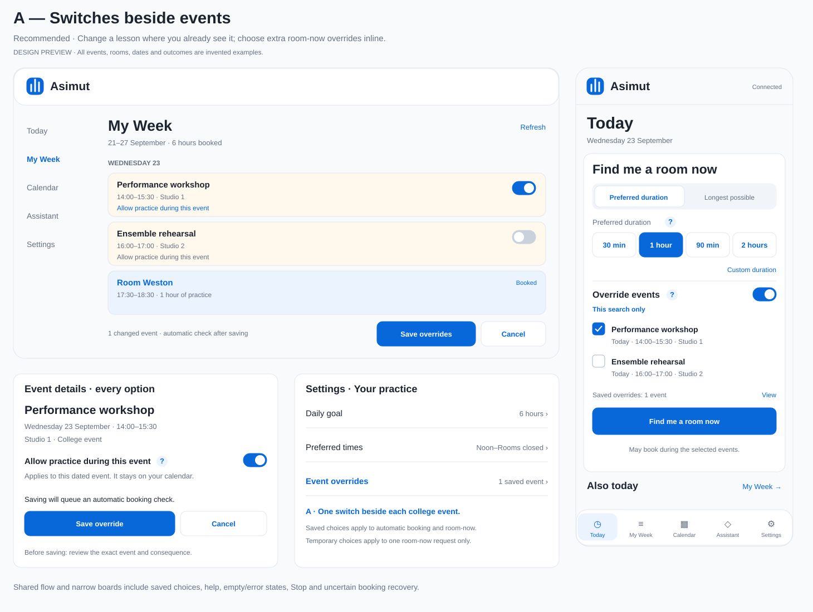
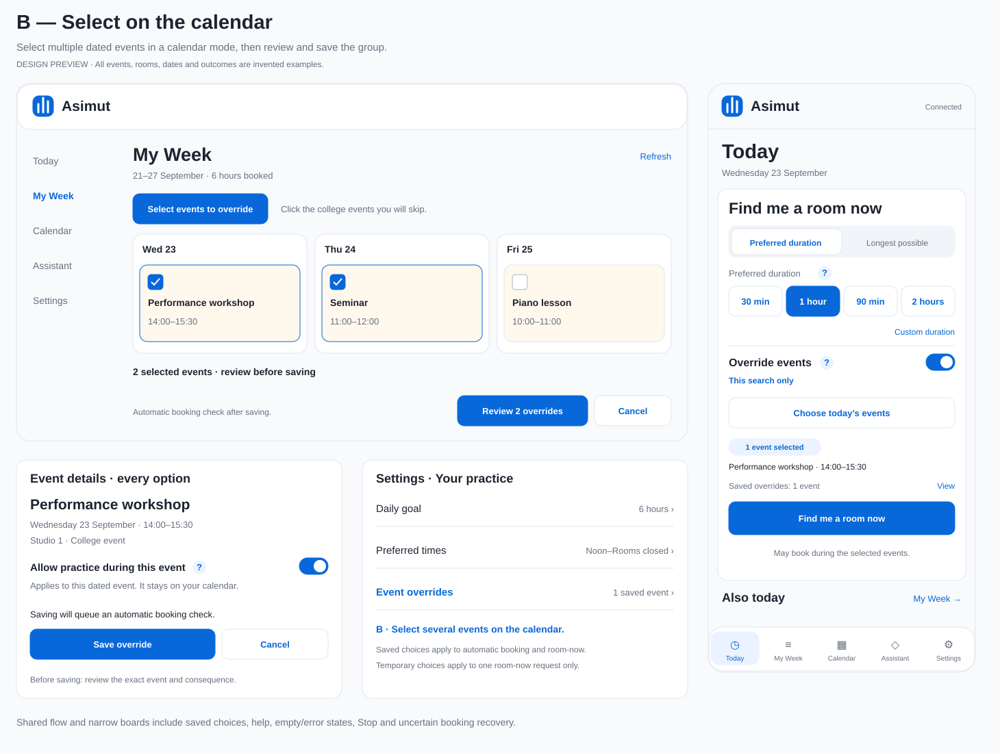
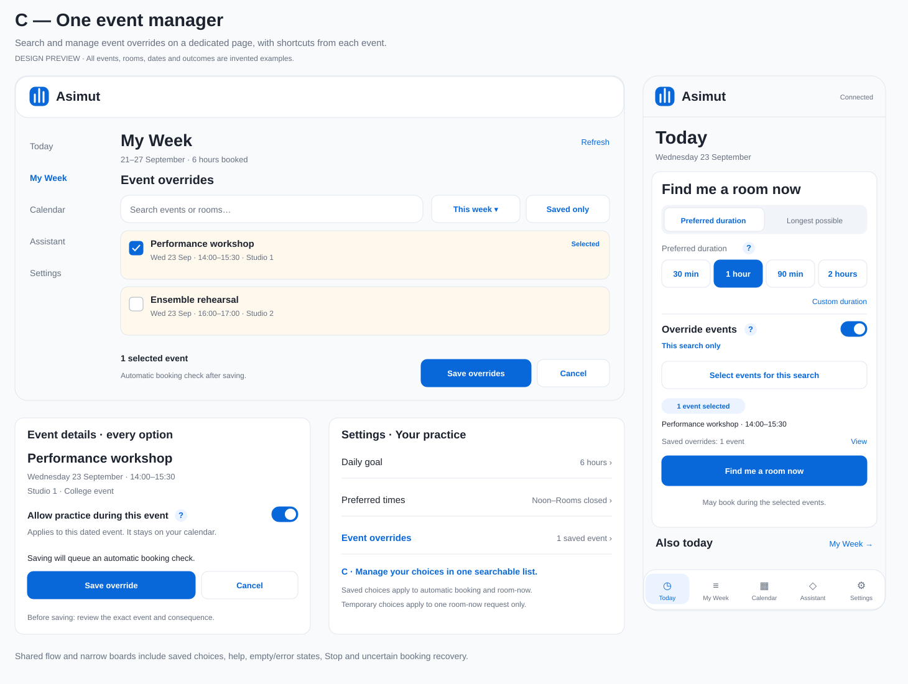
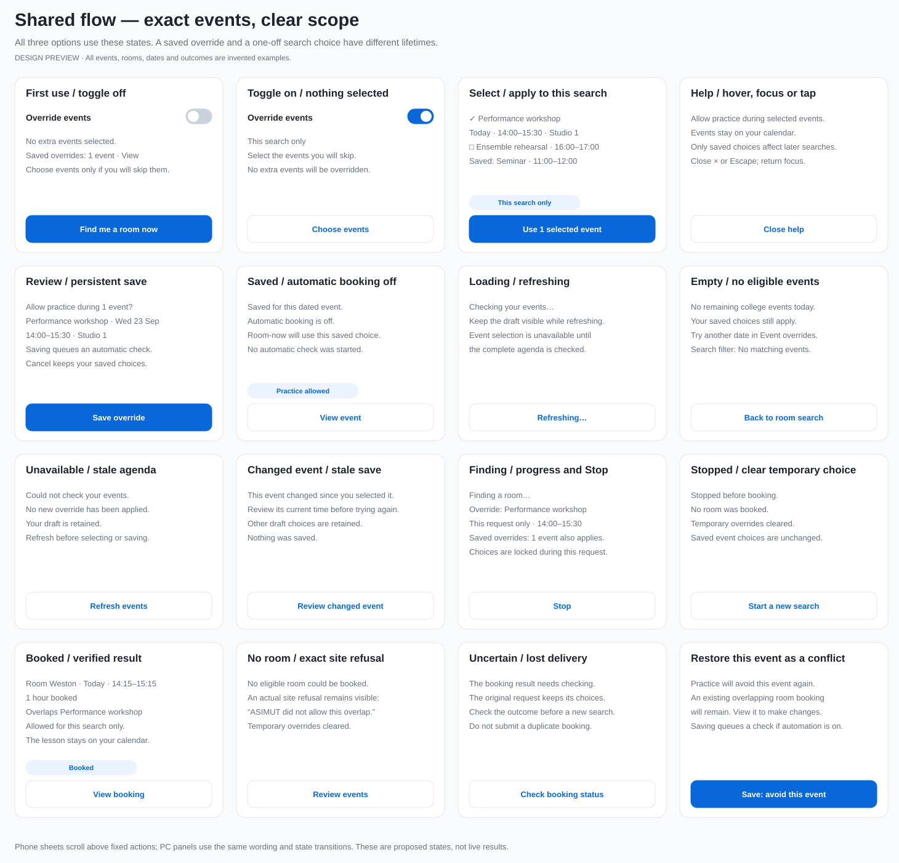
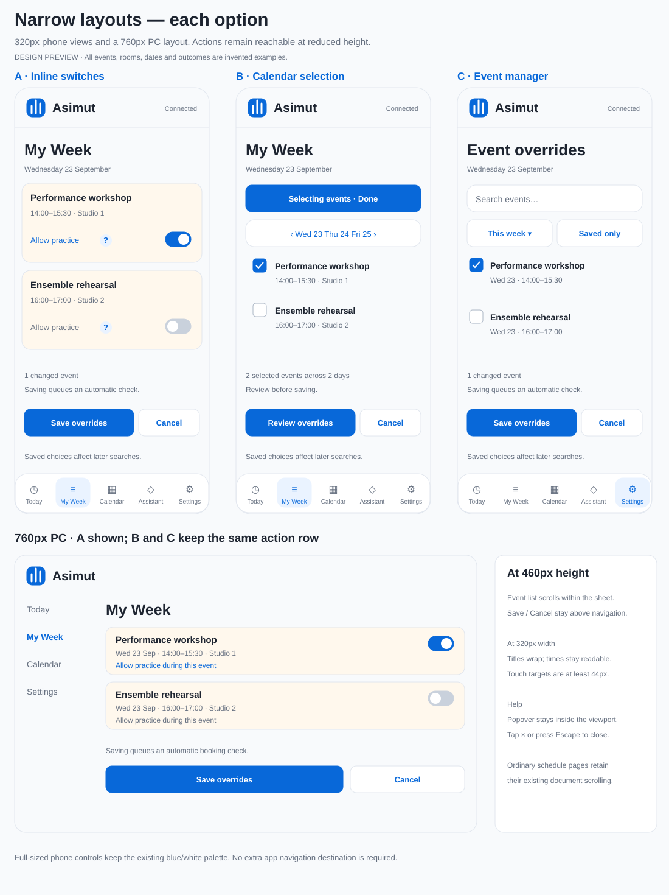

Practise during events you’re skipping
Three proposals in the current Asimut style. All example data is invented. These are designs awaiting your choice.
Save an override for a specific dated event, or turn on Override events in Find me a room now and select events for that search only. Events remain on your calendar.
A — Switches beside events
Recommended. Select a lesson from your schedule; expand Override events directly in the room finder.

Open full-size editable SVGB — Select on the calendar
Select several events across dates, then review the batch. Room-now uses a picker sheet.

Open full-size editable SVGC — One event manager
A searchable page for event choices, with shortcuts from event details and room-now.

Open full-size editable SVGShared flow and states
Setup, persistent versus one-search scope, help, Save/Cancel, loading, empty, errors, progress, Stop and recovery.

Open full-size editable SVGSmall screens
Each option at 320px, a 760px PC example, and short-height behavior.

Open full-size editable SVG